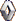

| Circuit | Date | Winner | ||
| Alastaro | 15 May | #19 - J.Nurminen (Audi A4) | ||
| #19 - J.Nurminen (Audi A4) | ||||
| Ahvenisto | 29 May | #2 - P.Lähteenmäki (Honda Civic Type-R) | ||
| #19 - J.Nurminen (Audi A4) | ||||
| Tallinn-Linnaring | 12 June | #19 - J.Nurminen (Audi A4) | ||
| #19 - J.Nurminen (Audi A4) | ||||
| Seinäjoki | 24 July | #2 - P.Lähteenmäki (Honda Civic Type-R) | ||
| #5 - K.Grönthal (BMW 320i) | ||||
| Kemora | 13 August | #17 - K.Ahonen (Renault Mégane) |  | |
| 14 August | #4 - I.Sepp (Audi A4) | |||
| #4 - I.Sepp (Audi A4) | ||||
| Ahvenisto | 3 September | #10 - A.Laivola (SEAT Toledo) | ||
| 4 September | #2 - P.Lähteenmäki (Honda Civic Type-R) | |||
| #2 - P.Lähteenmäki (Honda Civic Type-R) | ||||